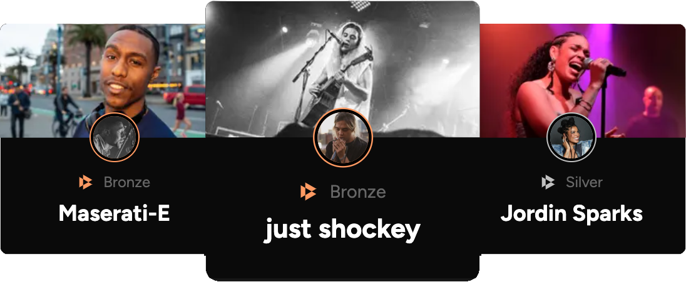
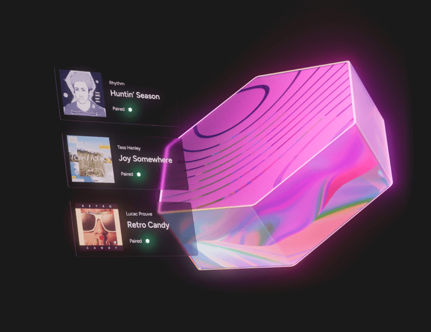
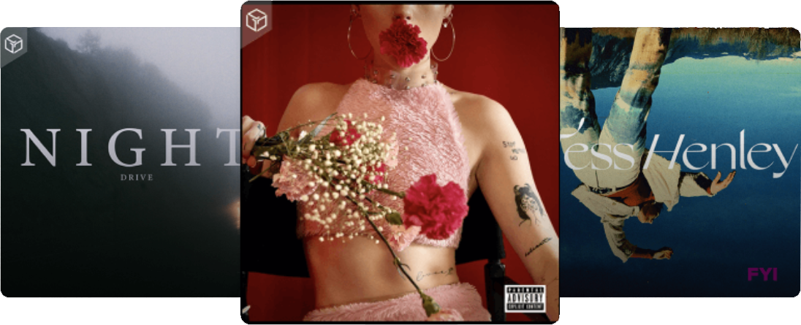
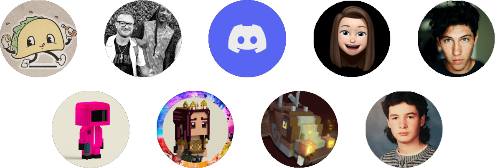

Stream free. Own tracks. Earn rewards
Get more as a fan when you listen to the artist's you love. Buy a track and earn rewards as others stream. Spend your rewards in the All Access store, a place that is full of exclusive merchandise, experiences and more.
Create Free AccountA music platform giving artist's independence and fans unique experiences, merchandise and rewards.
Own music tracks others might play
From well known names to emerging talent. Stream the tracks you love and collect the songs you think others will want to play.
Earn and hold tokens to access the store
Token is distributed to node operators and track owners, for their contribution to the decentralized music platform.
Share your tracks to access rewards
Share content you own by pairing your track(s) to a Gala Music node. When your tracks are played, you share in distribution.
Built for scale using dynamic emissions
Find out more about "max supply", diminishing rate of emissions and the Gala Music token's utility with our Gala Music token (pre-listing) write-up.
Our Partners and Collaborators
Music Label 3.0
Know a hit when you hear one? Follow the crowd with new music from big names, or take a change on someone new.
Generate rewards when your tracks are played, watch trends to keep your place on the leaderboard.
Store rewards, then claim your content to enjoy, share, trade or sell to another fan or collector.
A Rewarding Experience
Transforming music from a low valued, streamed commodity, into an interactive, unique and reward-generating experience.
-
Go Beyond Streaming
Discover a music platform with a gamified and interactive edge. Stream songs for free, create a catalog for rewards and itneract with artists in ways you never thought possible.
-
Earn Distribution Rewards
Governed by exosystem activity, the Gala Music token supply is controlled by a bonding curve, which is fuelled by the fans discovering fun and unique music experiences.
-
Get Next-Level Access
Distribution received by node operators and track owners can be collected and held to receive "Access Points". These points can be used in store (and for node upgrades).
Only Fans ... and supporters enter the "All Access" store
Build your rewards and access exclusive content and experiences by allocating tokens. All artists, known and new, provide experiences for the "All Access" store. The store also holds partner content, including items such as event passes, merchandise, collectibles and more!
Learn moreYou earned it
All nodes can host tracks and their capacity can be increased. As a track owner, opt-in to pair your content to an available host in the network.
Host your tracksOwned. Earned. Experienced. Get more from your music
A new way to play
Listen for Free

Are you a record label?
Find new revenue streams for your label & artists.
ApplyAre you an artist?
Take your career to the next level on Gala Music.
Get Started